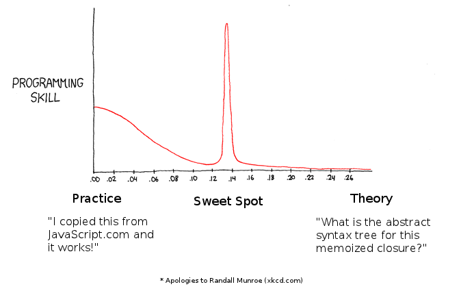

Professional JavaScript
Chris Oakman
September 2013
Chris Oakman
September 2013
The target audience for this talk are people who write JavaScript professionally.
My goal is to find the sweet spot between practice and theory.
The simple types in JavaScript are:
JavaScript has only one number type.
// numbers
var num1 = 96;
var num2 = 2.5;
var num3 = 1e3; // 1000
if (1 === 1.0) { // true
console.log('every number is a 64-bit floating point');
}
if (1000 === num3) { // true
console.log('one thousand');
}
// beware of floating point operations in JavaScript
if (0.1 + 0.2 === 0.3) { // false
console.log('Pigs are flying.');
}
// convert to integers if needed
if (0.1 * 1000 + 0.2 * 1000 === 0.3 * 1000) { // true
console.log('Integers are generally safe.');
}
// strings
var str1 = 'Hello'; // single quotes
var str2 = "world!"; // double quotes
console.log(str1 + ' ' + str2); // "Hello world!"
// strings have a length property
console.log( str1.length ); // 5
// strings have built-in methods
console.log( str1.toUpperCase() ); // "HELLO"
console.log( str1.indexOf("e") ); // 1
console.log( str1.indexOf("z") ); // -1 (z not found)
console.log( str1.substr(3, 2) ); // "lo"
// NOTE: JavaScript does not have chars, only strings
// Strings in JavaScript are immutable
// boolean var yup = true; var nope = false; // null var never = null; // undefined is lack of assignment var huh; console.log(huh); // undefined
(yes, everything)
| Simple Types | Objects | ||
|---|---|---|---|
| Numbers | 9
| Objects | {}
|
| Strings | "hello"
| Arrays | []
|
| Boolean | true
| Functions | function() {}
|
| null | null
| Regular Expressions | /foo/i
|
| undefined | undefined
| ||
Numbers, Strings, and Booleans are object-like.
// this is an empty object; it has no properties
var empty = {};
// object with three properties: name, height-in-m, type
var monster = {
name : "King Kong",
"height-in-m" : 42,
type : "gorilla"
};
console.log(monster.name); // "King Kong" (dot notation)
console.log(monster['name']); // "King Kong" (bracket notation)
console.log(monster["name"]); // "King Kong" (bracket notation)
// "King Kong is a gorilla"
console.log(monster.name + " is a " + monster.type);
// change the value of monster.type
monster.type = 'giant gorilla';
// "King Kong is a 42m tall giant gorilla"
console.log(monster.name + " is a " + monster["height-in-m"]
+ "m tall " + monster.type);
// NOTE: dot notation is preferred over bracket notation where possible
// a property's value can be obtained from any expression,
// including other objects
var me = {
name : {
first : "Chris",
last : "Oakman"
},
location : {
name : "Houston, TX",
lat : 29.75961,
lng : -95.36270
}
};
// "Chris Oakman"
console.log(me.name.first + " " + me.name.last);
// NOTE: nested objects are a powerful way to represent data
// more on this when we get into the DOM
// this is an empty array
var arr1 = [];
// array with several values
// NOTE: trailing commas are not allowed
var arr2 = ["alpha", "bravo", "charlie"];
// arrays are zero-indexed
console.log( arr2[1] ); // "bravo"
// arrays can contain values of multiple types
var arr3 = [0, 1, "two", "three", 4, { num : 5 }];
console.log( arr3[2] ); // "two"
console.log( arr3[5].num ); // 5
// arrays come with the .length property
console.log( arr3.length ); // 6
// .push method
arr3.push("six"); // adds the string "six" to the end of arr3
// .join method
console.log( arr2.join("-") ); // "alpha-bravo-charlie"
// arrays can be the value of an object property
var obj1 = {
cities : ["Austin", "Dallas", "Houston"]
};
eval()
<?xml version="1.0" encoding="UTF-8"?> <pets> <pet name="Mack" type="cat" /> <pet name="Simon" type="cat" /> <pet name="Sophie" type="dog" /> </pets>
{
"pets" : [
{
"name" : "Mack",
"type" : "cat"
},
{
"name" : "Simon",
"type" : "cat"
},
{
"name" : "Sophie",
"type" : "dog"
}
]
}
// JavaScript has regular expressions var str1 = "Foo Bar"; var regex = /foo/i; // NOTE: "replace" is a method of every String var str2 = str1.replace(regex, "Bar"); console.log( str2 ); // "Bar Bar" // Regular Expressions are a powerful tool // learn them, use them, don't over-use them
It is better to have 100 functions operate on one data structure than to have 10 functions operate on 10 data structures.
// a simple function
function add1 (a, b) {
return a + b
}
// another way of writing the same function
var add2 = function (a, b) {
return a + b
};
// execute a function with ()
var result = add2(3, 2)
console.log( result ) // 5
// functions can be the value of an object property
// when this happens they are often called "methods"
var obj1 = {
add : add2,
subtract : function(a, b) {
return a - b
}
};
console.log( obj1.add(3, 2) ) // 5
console.log( obj1.subtract(3, 2) ) // 1
// named functions will "hoist" to the top of their scope
// regardless of where they were defined
// this is fine
foo();
function foo () {
// do something...
}
bar() // error - bar is not defined
var bar = function () {
// do something else...
};
// Functions can be called with any number of arguments.
// JavaScript does not have default values for function arguments,
// they must be defined inside the function scope.
function foo (a, b) {
if (typeof a !== 'number') { a = 5 }
if (typeof b !== 'number') { b = 5 }
return a + b
}
foo(1) // returns 6
// Every function scope comes with an implicit arguments variable
// that contains the function arguments.
function bar () {
console.log( arguments[0] ) // "Alpha"
console.log( arguments[1] ) // "Bravo"
console.log( arguments[2] ) // undefined
}
bar("Alpha", "Bravo")
var a = "apple"
var func1 = function () {
// inner methods have access to outside variables
// this function has access to variable "a"
a = "apricot" // change the value of "a"
console.log(a)
}
console.log(a) // "apple"
func1() // "apricot"
console.log(a) // "apricot" (the value of "a" was changed inside func1)
var b = "banana"
var func2 = function () {
// define variable "b" inside this function
// completely separate from the "b" defined outside the function
var b = "blueberry"
console.log(b)
}
console.log(b) // "banana"
func2() // "blueberry"
console.log(b) // "banana"
var counter = (function () {
// variable "count" is defined inside our function
var count = 0
// we return an object with three properties
// each property is a function that has access to the "count" variable
return {
up : function() { count++; },
down : function() { count--; },
value : function() { return count; }
};
})() // execute the function immediately, which returns an object
console.log( counter.value() ) // 0
for (var i = 0; i < 6; i++) { // increment 6 times
counter.up()
}
console.log( counter.value() ) // 6
counter.down()
console.log( counter.value() ) // 5
// The "count" variable exists in memory, but we do not have direct access to it
// this is called closure.
// Closure is how encapsulation is done in JavaScript.
this refers to the object that the function is executing in
function printThis() {
console.log( this.foo );
}
var obj1 = {
foo : "Level 1",
printMe : printThis,
child : {
foo : "Level 2",
printMe : printThis
}
};
// executing in the scope of the global object (window)
printThis(); // undefined because window.foo does not exist
// executing in the scope of obj1
obj1.printMe(); // "Level 1"
// executing in the scope of obj1.child
obj1.child.printMe(); // "Level 2"
// executing obj1.child.printMe in the scope of obj1
obj1.child.printMe.apply(obj1); // "Level 1"
// executing printThis in the scope of a new object
printThis.apply( { foo : "Inception!" } ); // "Inception!"
Object.prototype
// create an empty object, it inherits from Object.prototype
var obj1 = {};
console.log( obj1.foo ); // undefined - property "foo" does not exist on
// either obj1 or it's prototype
// add foo to Object.prototype
Object.prototype.foo = "bar";
console.log( obj1.foo ); // "bar" - property "foo" does not exist on obj1,
// but was found on it's prototype
// add "foo" to obj1 directly
obj1.foo = "ZZZ";
console.log( obj1.foo ); // "ZZZ" - property "foo" is directly on the object,
// we don't look up the prototype chain
// remove "foo" from obj1
delete obj1.foo;
console.log( obj1.foo ); // "bar" - property "foo" does not exist on obj1,
// but was found on it's prototype
// remove "foo" from Object.prototype
delete Object.prototype.foo;
console.log( obj1.foo ); // undefined - property "foo" does not exist on
// either obj1 or it's prototype
// NOTE: don't modify Object.prototype in practice; this is only for example
var obj1 = {};
var obj2 = {};
console.log( obj1.foo ); // undefined
console.log( obj2.foo ); // undefined
Object.prototype.foo = "bar";
console.log( obj1.foo ); // "bar"
console.log( obj2.foo ); // "bar"
obj1.foo = "ZZZ";
console.log( obj1.foo ); // "ZZZ"
console.log( obj2.foo ); // "bar"
delete Object.prototype.foo;
console.log( obj1.foo ); // "ZZZ"
console.log( obj2.foo ); // undefined
// NOTE: don't modify Object.prototype in practice; this is only for example
// circle Constructor
function Circle(radius) {
// use a default radius if the one provided is not valid
if (typeof radius !== 'number' || radius < 0) {
radius = 5;
}
// assign the radius to this object's context (ie: this)
this.radius = radius;
}
// calculate area
Circle.prototype.area = function() {
return Math.PI * this.radius * this.radius;
};
var c1 = new Circle(8);
console.log( c1.radius ); // 8
console.log( c1.area() ); // 201.062
var c2 = new Circle(); // use the default radius
console.log( c2.radius ); // 5
console.log( c2.area() ); // 78.540
// NOTE: the .area function only exists in memory once no matter how many
// Circle objects we create because it exists on the prototype
window
window.document is the start of the DOM tree
// these three lines all do the same thing
foo = "bar"; // no "var" declaration, so it bubbles up to the global object
this.foo = "bar"; // "this" is the global object
window.foo = "bar"; // "window" is the global object
// NOTE: don't this in practice
// the best way to establish a global is:
window.MYAPP = window.MYAPP || {};
<!-- HTML -->
<div id=pets>
<h1>Pets</h1>
<ul>
<li>cat
<li>dog
<li>fish
</ul>
</div>
// example DOM object
{
id : "pets",
innerHTML : "<h1>Pets</h1><ul><li>cat...",
tag : "div",
children : [
{
innerHTML : "Pets",
tag : "h1"
},
{
children : [ ... ],
innerHTML : "<li>cat</li><li>dog...",
tag : "ul"
}
]
}
// NOTE: not complete; just an example
<div id=pets style="color:red">
<h1>Pets</h1>
<ul>
<li>cat
<li>dog
<li>fish
</ul>
</div>
// get the element
var el = document.getElementById("pets");
// change the text color from red to blue
el.style.color = "blue";
// use a library instead
$('#pets').css('color', 'blue');
<div id=pets>
<h1>Pets</h1>
<ul>
<li>cat
<li>dog
<li>fish
</ul>
</div>
// get the element
var el = document.getElementById("pets");
// attach a function for the "onclick "event
el.onclick = function(event) {
alert("You clicked me!");
// the object context of this function
// execution is the DOM element
console.log(this);
// the "event" variable is an object
// with information about the event
console.log(event);
};
// use a library instead
$('div#pets').on('click', function() { ... });
<div id=pets>
<h1>Pets</h1>
<ul>
<li>cat
<li class=doggy>dog
<li>fish
</ul>
</div>
// get the element
var el = document.getElementById("pets");
// attach a function for the "onclick "event
el.onclick = function(event) {
// check to make sure they clicked on li.doggy
if (event.target.tagName.toLowerCase() === 'li'
&& event.target.className === 'doggy') {
alert('Woof woof!');
}
// the object context of this function
// execution is the "pets" DOM element
console.log(this);
// but the event object is for the
// element that received the click
console.log(event);
};
Never do these things. There is always a better way.
eval()
setTimeout("string", 1000)
with
Rarely do these things. Only when there is no other way.
document.write() or document.writeln()
Always do these things. There is never a reason not to do them.
<!doctype html>
parseInt(val, 10)
Always do this stuff. There are occasional exceptions.
=== and !==
<script> tags
Strongly recommended from personal experience.
camelCase for variable names (de facto JS convention)
this where possible
call, apply)
Chris Oakman
chris@oakmac.com
http://oakmac.com/professional-javascript-short
https://github.com/oakmac/professional-javascript-short
Previous recording